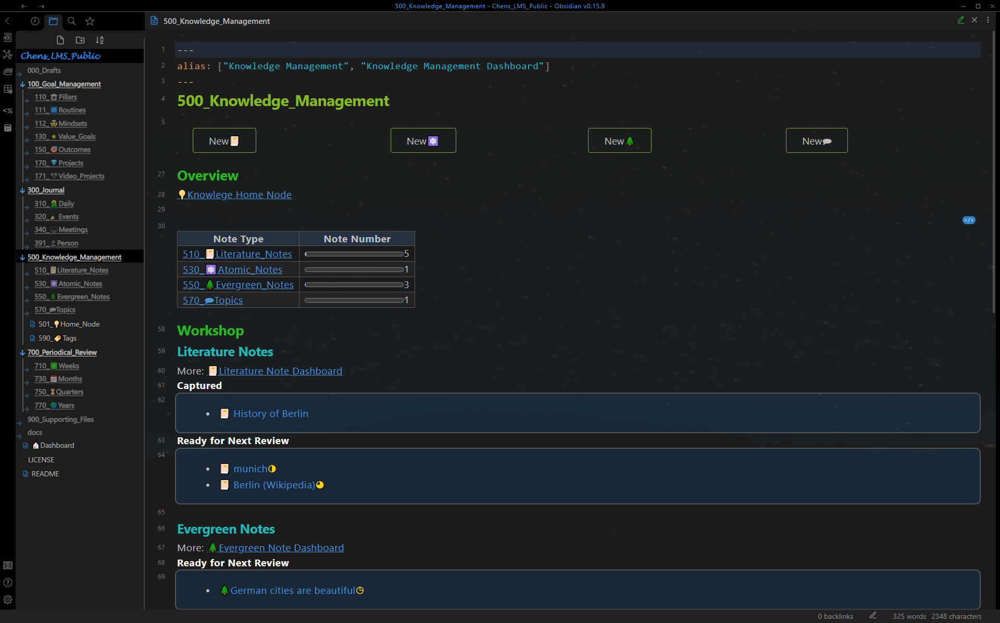
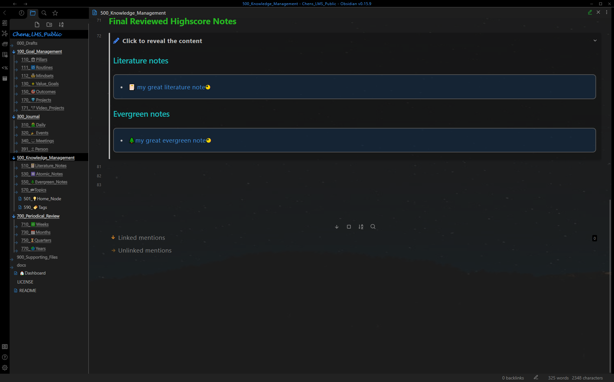
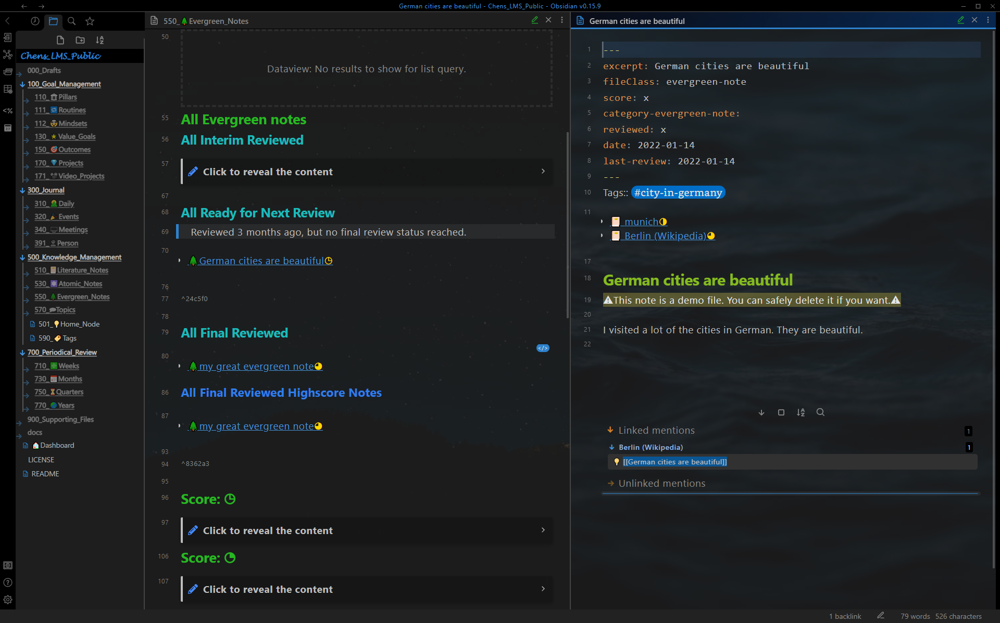

展示案例 - 知识管理
Show Case - Knowledge Management
知识管理仪表板
Knowledge Management Dashboard
知识管理仪表板，带有文献笔记和用于间隔重复的常青笔记 1。

知识管理仪表板，带有最终回顾的高分笔记

文献笔记
Literature Note
文献笔记仪表板（左窗格）和文献笔记（右窗格）。 仪表板：笔记显示在不同的章节，具体取决于回顾状态（捕获、中期回顾、最终回顾）。 文献笔记：Yalm front matter，所有相关笔记（上下文感知重铺 2）。使用渐进式摘要处理的正文。

原子笔记
Atomic Note
带有原子笔记（右窗格）的原子笔记仪表板（左窗格）。 仪表板：笔记根据类别显示在不同的章节。 Atomic note：使用 yalm front matter，以及提及它的笔记。

常青笔记
Evergreen Note
带有常青笔记（右窗格）的常青笔记仪表板（左窗格）。 仪表板：笔记显示在不同的章节，具体取决于回顾状态（捕获、中期回顾、最终回顾）。 Evergreen note：Yalm front matter，所有相关的笔记（上下文感知重铺 2）和提到它的笔记。

主题笔记
Topic Note
带有主题笔记（右窗格）的主题笔记仪表板（左窗格）。 仪表板：根据分数和与价值目标的关系，笔记显示在不同的部分。 Topic note：Yalm Front matter，所有未处理的相关笔记（合并助手3）和主题摘要。

主节点
Home Node
所有顶级主题都连接到主节点，以便于导航。

标签
Tag
标签仪表板